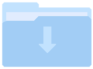

Assignments (COMP.4610)
Click on the folders below to follow the assignment links.
Note: HW1 link will do nothing. HW2 will return this page.
-  HW1 (Course Setup)
- HW2 (This page)
- HW3

UMass Lowell Student and Digital Technology & Innovation Intern
University of Massachusetts - Lowell
Degree: Computer Science (3.7 GPA)
Anticipated Graduation: May 2021
Accomplishments: Dean's List, Commonwealth Honors
Off-hours you will likely find me exercising, hiking, or keeping up with the latest technologies.
For business inquiries or job opportunities, feel free to send me an email below or send me a message on LinkedIn!
Email: Michael_Quaratiello@student.uml.edu
Click on the folders below to follow the assignment links.
Note: HW1 link will do nothing. HW2 will return this page.